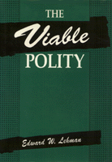

New criteria for evaluating the interaction of state and society
New criteria for evaluating the interaction of state and society


 New criteria for evaluating the interaction of state and society
New criteria for evaluating the interaction of state and society

|  |
The Viable PolityEdward W. Lehmancloth EAN: 978-0-87722-994-0 (ISBN: 0-87722-994-5) |
"A well-written, intelligent discussion of an important issue."
—Edward Portis, Texas A&M University
Viewing the rapid changes in our political landscape, Edward W. Lehman observes that understanding political processes has become increasingly critical, and he suggests new criteria for evaluating the interaction of state and society. The Viable Polity challenges the customary ways that political successes and failures have been treated. Lehman concentrates on the fundamental assumptions needed to assess a democratic system's viability and explores the legitimation-crisis paradigm, insisting that we must move beyond its hollow rhetoric.
Lehman then begins the conscious building of the viability paradigm. He contends that political viability must be judged along three interdependent dimensions: a state's capacity to pursue its goals effectively; the polity's ability to elicit citizen participation efficiently; and the possible legitimacy of prevailing political game rules.
Armed with this framework, the author delves into three pivotal anomalies of modern democratic life. First, he considers how enhancing capacities in one sector can actually undermine the overall effectiveness of the state as well as foster inefficient involvement and erode legitimacy. Second, he examines the apparent contradiction implicit in the coexistence of extensive public apathy and widespread moralistic participation in democratic polities. Third, he investigates the circumstances that presently permit high political legitimacy to co-exist with growing distrust of government leaders. Finally, Lehman contrasts the impediments to viability that are unique to the American political system with those that are more widely shared by liberal democracies.
Preface
Introduction: Paradigm Lost
1. Paradigm Regained: Core Elements of an Alternative Approach
2. Predicaments of State Effectiveness
3. Anomalies of Inefficient Participation
4. A Crisis of Political Legitimacy?
5. The End of History—The End of the State?
Notes
References
Index
Edward W. Lehman is Professor of Sociology at New York University and author of Political Society: A Macrosociology of Politics.
Political Science and Public Policy
Sociology
© 2015 Temple University. All Rights Reserved. This page: http://www.temple.edu/tempress/titles/897_reg.html.